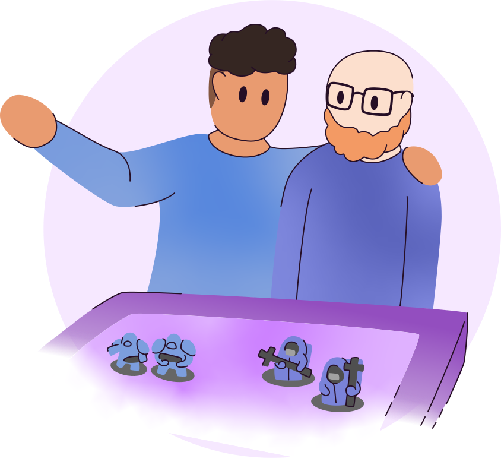

La route vers notre triomphe
Pour ce projet, nous avons été conseillés de prendre contact avec une association. Mais étant mal à l’aise à l’idée de déranger des gens faisant un travail important, j’ai choisi de me diriger vers les joueurs et organisateurs d’événement autour du jeu.
Par contre, le jeu, c’est extrêmement large comme mot. Ici, je parle des jeux physiques: jeux de cartes, de société, wargames… J’avais déjà entendu des gens se plaindre un peu des organisations autour de ça, c’est pourquoi j’ai décidé de partir là-dessus.
S'allier pour réussir
Pour démarrer, il faut aller à la rencontre des utilisateurs. Ce fut ma première peur car j’ai beau être quelqu’un qui apprécie discuter, je suis vite mal à l’aise socialement. J’ai tout de même su me débrouiller et récolter des témoignages malgré quelques péripéties.
Interview d'utilisateurs
Pour débuter le projet, j’ai pris contact et rencontré les joueurs et les organisateurs. Pour ce faire, j’ai d’abord cherché à entrer en contact avec des magasins, ludothèques ou autres lieux spécialisés dans le milieu.
Comme départ, je suis allé à l’Imaginarium, un magasin de jeux dans le centre de Namur que je connaissais déjà et où je savais que des événements avaient lieu. Là-bas, j’ai assisté à un tournoi de Yu-gi-oh où j’espérais interviewer quelques personnes mais la dure réalité des choses m’a rattrapée. En effet, en tournoi, les joueurs sont confrontés les uns aux autres en duel avec un temps de réflexion limité. De plus, les joueurs sont rarement en nombre impair, il est donc assez dûr d’avoir quelqu’un à part pendant ce genre d’événement. J’ai tout de même pu questionner deux-trois personnes et prendre des notes utiles mais par la suite, j’ai privilégié le distanciel.
J’ai donc rejoint un serveur discord sur lequel j’ai pu interviewer des joueurs en appel vocal. Des groupes Facebook de Warhammer et de jeux de société m’ont également permis d’obtenir quelques réponses supplémentaires. A chaque discussion, j’ai écrit un rapport et chaque rapport a été stocké dans un google sheet pour analyse par la suite.
Prendre conscience des embûches
Durant ces rencontres avec les utilisateurs, j’ai essayé d’identifier quelques problèmes récurrents. J’ai su mettre le doigt sur trois points qui me semblaient ressortir:
- difficulté à avoir des locaux
- soucis de communication
- certains joueurs désagréables.
Je pensais que le deuxième serait le plus intéressant mais j’ai assez rapidement changé de focus en faveur du premier point, celui-ci étant finalement plus attrayant.
Reconnaître les problèmes importants
Durant les interviews, j’avais un guide d’entretien que j’ai soumis à mes utilisateurs. A l’aide de celui-ci, j’ai essayé de relever les problèmes (et même les facilités) que les joueurs et organisateurs ont pu avoir. J’ai donc posé des questions sur leur ressenti lors des événements, sur les problèmes qu’ils ont pu rencontrer pour jouer, ainsi que des questions ciblées sur la communication autour de ces événements, ayant déjà entendu dire que cela dérangeait certaines personnes.
Après deux ou trois interviews, j’ai relevé quelques problèmes que les utilisateurs ont pu rencontrer pour développer et voir si ses embûches seraient abordées par d’autres. J’ai ainsi noté trois anicroches substantielles :
- 1 - pour les organisateurs, une éventuelle difficulté à trouver des salles facilement
- 2 - des problèmes de communication notoires, provoquant probablement la peur des organisateurs à ne pas avoir assez de joueurs
- 3 - certains types de joueurs avec qui il serait désagréable de jouer
-
3 - X
Le dernier point étant plus de l’ordre du social, les seules solutions viables que j’ai pu imaginer à ce moment n’étaient pas très éthique et le tout a donc été mis de côté. Le premier point ne ciblant qu'une partie des utilisateurs initialement prévus, j’ai alors privilégié le second qui me paraissait être le plus adapté jusqu’ici.
-
2 - X
J’ai ainsi continué les interviews et me suis rendu compte en rapportant les réponses des différentes personnes qu’effectivement, il est possible qu’il y ai un léger problème de communication mais celui-ci est mineur et la plupart des interrogés ne semblaient pas perturbés ou assez dérangés par cela pour développer l'intérêt d’un projet. Le problème principal étant souvent l’annonce de petits événements jugée en retard ou le manque de visibilité de certains.
JMais comme m’a dit une personne lors d’une interview: “même un débutant trouvera [les infos pour les événements], s’il cherche vraiment il trouvera”. C’est donc sur ces mots que j’ai décidé de pivoter et de me focus finalement sur la première anicroche que j’avais pu noter: la recherche d’endroits parfois difficiles pour les organisateurs.
-
1 - v
En effet, des quelques organisateurs avec lesquels j’ai discuté, un bon nombre m’ont parlé des salles où ils organisaient leur partie en m’en pointant le négatif, que ce soit la difficulté à trouver premièrement un lieu ou le manque de place aux endroits disponibles. Les salles et leur prospection semblaient frustrantes et surtout cette frustration semblait récurrente, au point que même un joueur m’a fait part d’insatisfactions dues à un manque de place à un événement malgré le grand nombre de joueurs attendus.
C’est donc sur ce problème que je me suis focalisé pour la suite et pour lequel j’ai réfléchi à une aide aux organisateurs pour leur faciliter les choses et ainsi éventuellement améliorer la qualité de l’organisation des événements auxniveaux des infrastructures.
Préparer sa tactique
Mes hypothèses furent très claires dès le début. J’admets qu’à part ce pivot au milieu des interviews, je n’ai pas tergiversé lorsque je devais penser à des possibilités de solutions. Le seul problème est qu’ayant une idée assez bien construite, je n’en ai eu qu’une et n’ai pas réussi à me défaire de cette pensée pour rechercher d’autres possibilités. C’est pourquoi je vais tout de même vous présenter celle précédant ma redirection, puis en venir à celle qui nous intéresse principalement.
Des hypothèses construites
Avant de pivoter, j’aurais ainsi créé une sorte d’application servant de réseau pour les joueurs et les organisateurs, permettant ainsi d’afficher les événements les plus proches ou ceux qu’on choisit de suivre. Cela aurait permis de facilement communiquer avec les joueurs dans le cas où tout serait centralisé sur un réseau prédéfini pour cela.
L’objectif était également de faciliter le plus possible l’encodage des événements pour les organisateurs, pour permettre une diffusion plus rapide et à portée de main. Malheureusement (ou heureusement), la plupart des joueurs trouvent leur compte dans la communication actuelle et les remarques faites sont plus souvent dépendantes de l’humain que du médium. Par exemple, les retards sur l’annonce des événements viennent souvent du fait que ce n’est pas l’activité principale de ceux qui les organisent.
Après pivot, je me focalise sur les organisateurs et sur la recherche d’infrastructure pour les événements. J’imagine ainsi une application répertoriant les salles pouvant accueillir les joueurs. Ce serait une sorte de bibliothèque mais spécialisé pour le jeu. Cela permettrait ainsi de facilement trouver un endroit où organiser les parties en spécifiant les différentes caractéristiques de la salle, tels que la présence d’un bar, de tables propres au wargames ou autres infrastructures utiles.
Dès lors, on pourrait y retrouver autant des salles permettant de réaliser de grand tournoi que des arrières boutiques acceptant d’accueillir les parties de quelques joueurs. Le but étant, comme vous l’aurez compris, que les organisateurs gagnent du temps sur la recherche de lieu et puissent plus s’investir sur le reste de l’événement et la communication avec les joueurs.
Orchestrer son plan
L’idée d’une application me paraît fort logique ici. Une simple bibliothèque de lieux où jouer est selon moi parfaite pour résoudre ce problème. Certes, il faut développer et rendre la chose la mieux adaptée aux utilisateurs mais le but de ce projet n’est que d’inventer la solution. Je n’expliquerais donc pas en profondeur mais seulement la surface des concepts utiles à l’application.
L’Alexandrie des locaux pour jouer
L’app serait ainsi une sorte de catalogue. Elle reporterait les endroits qui ont déjà accueilli des événements mais également ceux se mettant à disposition. On pourrait ainsi s’inscrire et proposer sa propre salle.
L’app ne servirait pas spécifiquement de lieu de location directe (par là je veux dire de pouvoir payer directement sur le site) car ce serait quelque chose à penser lorsque l’on développe le système économique de notre service, ce qui n’est pas le cas pour ce projet. Dans mon cas, le but principal est de pouvoir facilement mettre en contact des gens possédant une salle et les organisateurs. De simple moyen de communication serait donc envisageable.
Un système de recherche permettrait de trouver des endroits selon certains paramètres tels que la localisation, la taille de la salle ou les jeux qui ont déjà été accueillis par exemple. D’autres spécificités seraient bien sûr affichables sur l’article de la salle, et par ailleurs présentes dans les filtres de recherche. On pourrait ainsi définir si une salle est accessible aux personnes à mobilité réduite, si elle présente un bar/cuisine ou s’il y a déjà des mises à disposition spéciales pour certains jeux.
Exemples de mises à disposition:
-
La plupart des jeux de cartes font appel à un tapis de jeu pour bien délimiter chaque section de celui-ci, mais les tapis sont tous différents selon le jeu. Leur taille est ainsi fort affecté par cela et change l’espace nécessaire pour le confort des joueurs.
-
Le jeu de cartes Magic nécessite des cartes dites Terrain qui ne se trouvent pas dans la plupart des produits en magasin donc les événements ont tendance à en mettre à disposition des joueurs
-
Certaines tables sont spécialement faites pour jouer à certains jeux, tels que Warhammer qui demande des tables très spécifiques.
Des notes ou commentaires pourraient également permettre aux utilisateurs de trouver facilement chaussures à leur pied mais également d’essayer d’endiguer toutes formes de dérive: que ce soit humain à cause de personnes toxiques, ou des arnaques dû au système d’inscription.
Analyser l’adversaire pour triompher
S’il y a bien quelque chose que n’importe qui pourra me dire, c’est que mon projet n’est pas le seul sur le marché. Bien que je ne cherche pas ici à vendre un produit, si je crée une chose, c’est bien pour qu’elle soit utilisée. Alors pour éviter que ma création ne sombre dans l’oubli ou ne voit jamais le jour, j’ai un peu regarder ce que faisait la concurrence et comment je pouvais me démarquer. Et laissez moi vous dire que personne ne rivalise.
Ludique & utilitaire
Il existe pas mal de services en ligne permettant de trouver des lieux à louer: Airbnb, Salle.be, Eventplanner … mais aucun ne propose directement d’endroits pour organiser des événements de jeux.
Si l’on parle d’événement, la plupart se focalisent sur les mariages, les réunions, les séminaires et autres événements similaires mais aucun ne possède de section spécifique pour les événements de jeux, qu’il soit physique ou vidéo-ludique. D’ailleurs, en cherchant un service de location de lieux pour jouer, le peu de résultat que je trouve ne remplisse pas ce que j'essaye de faire (principalement de la location de salle de jeu ou location de jeux ).
C’est bien d’être efficace, c’est déjà une bonne chose, mais quand on prend des sites comme celui de Warhammer ou Cardfight , je trouve que cela ne donne pas fort envie. C’est pourquoi même si l’efficacité prime, j’aimerais tout de même rendre le design de mon app un minimum ludique. Pas exagérément non plus mais au moins faire quelques références à des jeux et rendre le tout agréable visuellement, voire divertissant comme à pu le faire ce site pour la voie ferrée norvégienne.
Le but ici ne serait pas de troubler la lecture avec des illustrations trop complexes à certains moment mais de ramener de petits dessins “simplistes” pour agrémenter le visuel, aider à la lecture et en faire des animations si possible.
Frapper un grand coup
La présentation d’un projet, c’est le moment de marquer le public. Au final, c’est probablement la partie qui se rapproche le plus d’un jeu:
- on évalue la situation;
- on établit la stratégie qui nous paraît la meilleure;
- et enfin, on essaie de la suivre le plus possible.
Une présentation aux petits oignons
Durant le court temps qui m'est offert pour exposer mon travail, je devrais aborder les différents points de celui-ci. Toutefois, chaque partie ne se verra pas accorder le même temps. La répartition se ferait ainsi:
- je m’attarderais le plus sur les problèmes et les solutions;
- les hypothèses ne nécessitent que de concise explications;
- pour le reste, le temps sera réparti de manière plus ou moins égal par section.
Je développerais donc principalement les problèmes et les solutions car ce sont des points essentiels de mon travail. Les problèmes, c’est le cœur du projet. Sans eux, rien n’aurait pu émerger. Les solutions, ce sont quant à elles la partie que j’ai le plus apprécié. C’est pourquoi ces deux sont une priorité dans ma présentation.
Un autre aspect important sera l’introduction et la conclusion. J’ai envie de réaliser quelque chose qui claque ou qui face du moins sourire. C’est aussi le moment de faire référence au jeu et surtout de mettre en tête le projet qu’on défend.
J’imaginais ainsi une introduction un peu décalée. Je commencerai en demandant si le public aime des choses qui, hors contexte du jeu, peuvent sembler perturbantes. Par exemple: “Est-ce que vous aussi vous aimez trahir vos proches ?”. Puis je désamorcerai en dévoilant que je parle ici de jeux et révèlerai ceux-ci en slide. Le tout ayant capté l’attention, je pourrais enchaîner pour expliquer le but de mon projet et entamer le reste.
Pour la conclusion, je ne suis pas encore certain de ce que je veux faire. Le mieux serait de résumer très brièvement le travail, de remercier le public et de dire une petite catch phrase sympathique, dans le style de la conclusion de ma landing page. Cependant, j’imagine cela mais j’aurais peut-être une meilleure idée plus tard.
Célébrer à son retour
Just Play’Inn est un projet pour lequel j’ai ressenti des émotions ambiguës. J’ai détesté aller à la rencontre des utilisateurs étant quelqu’un d’assez peu sociable mais l’idée et le concept avec lesquels j’ai pu ressortir m’ont assez bien enthousiasmé au fur et à mesure de leurs précisions.
Niveau design, il y a tellement de possibilités pour rendre quelque chose amusant que je ne sais moi-même pas ce à quoi ressemblera la version finale. Je sais que je ne m’amuserais pas à la réaliser, alors que je serais probablement content de moi lorsque ce sera terminé.
Le but de ce projet est de proposer une idée. Pour ma part, j’ai essayé que celle-ci soit amusante mais également efficace. J’espère ainsi que vous avez apprécié et qui sait, que l’on se retrouvera peut-être sur le prochain champ de bataille.